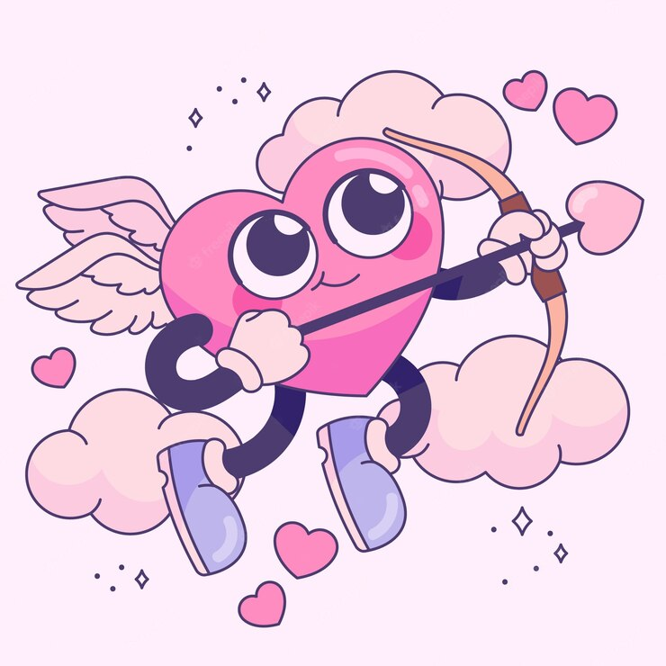

Não quero ter você para preencher minhas partes vazias, quero ser plena sozinha, quero ser tão completa que poderia iluminar a cidade e só aí quero ter você, porque nós dois juntos botamos fogo em tudo.
Não quero ter você para preencher minhas partes vazias, quero ser plena sozinha, quero ser tão completa que poderia iluminar a cidade e só aí quero ter você, porque nós dois juntos botamos fogo em tudo.
De tudo, ao meu amor serei atento antes, e com tal zelo, e sempre, e tanto que mesmo em face do maior encanto dele se encante mais meu pensamento. (...) Eu possa me dizer do amor (que tive): Que não seja imortal, posto que é chama mas que seja infinito enquanto dure.
Regresso devagar ao teu sorriso como quem volta a casa. Faço de conta que não é nada comigo. Distraído percorro o caminho familiar da saudade, pequeninas coisas me prendem, uma tarde num café, um livro. Devagar te amo e às vezes depressa, meu amor, e às vezes faço coisas que não devo, regresso devagar a tua casa, compro um livro, entro no amor como em casa.

(...) Eu te amo porque te amo. Não precisas ser amante, e nem sempre sabes sê-lo. Eu te amo porque te amo. Amor é estado de graça e com amor não se paga. (...)

(...) O meu tempo e o teu, amada, transcendem qualquer medida. Além do amor, não há nada, amar é o sumo da vida. (...)